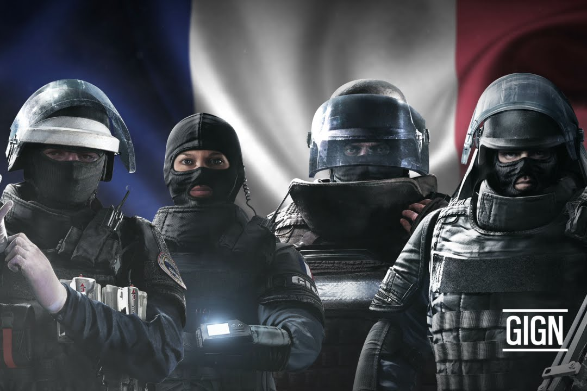
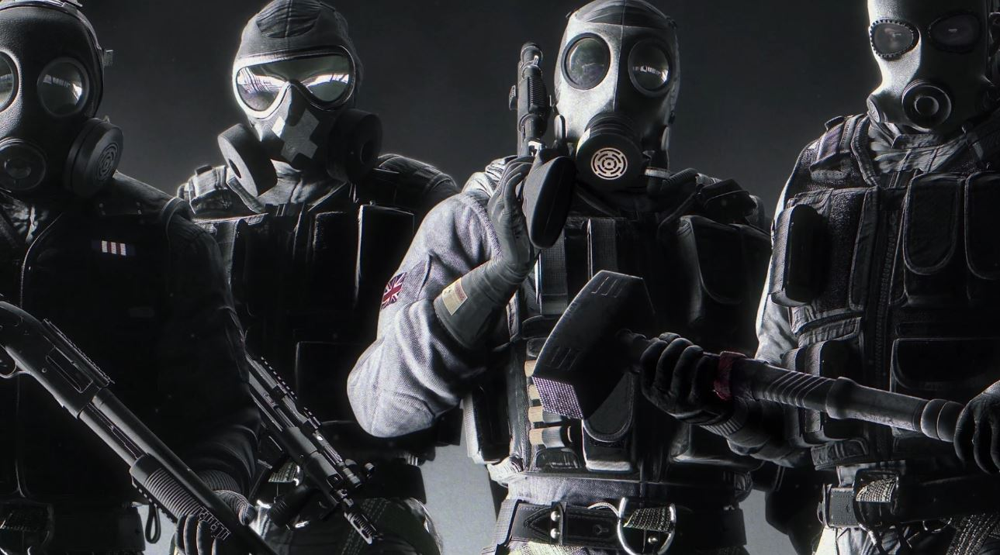
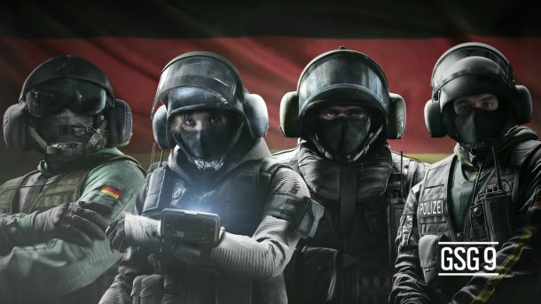
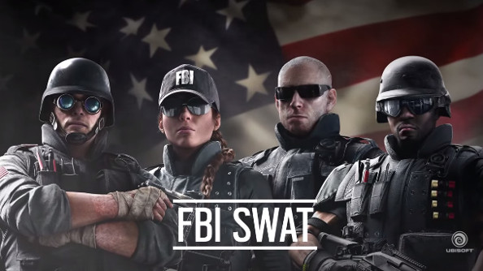
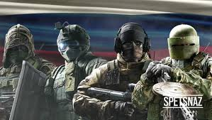

GIGN
В первой половине 70-х годов в связи с изменившейся обстановкой и в самой Франции, и за её пределами, на заморских территориях, в составе жандармерии были созданы несколько специальных подразделений. Одним из этих подразделений стал образованный 1 января 1971 эскадрон парашютистов мобильной жандармерии (место дислокации Мон-де-Марсан), предназначенный для действий в составе 11-й воздушно-десантной дивизии за пределами Франции. С того дня личный состав эскадрона неоднократно участвовал в различных операциях, проводимых правительством Франции на своих заморских территориях или в бывших колониях: Чаде (1980 г.), Ливане (1978—1985 гг.) и несколько раз в Центрально-Африканской Республике. После террористического акта на Мюнхенской Олимпиаде в 1972 г. во Франции было принято решение о создании отряда по борьбе с терроризмом. 1 марта 1974 в составе жандармерии было создано более известное в настоящее время специальное антитеррористическое подразделение — группа быстрого реагирования национальной жандармерии (Groupment d’Intervention de la Gendarmerie Nationale, GIGN). В начале 80-х годов после ряда проведенных антитеррористических операций, а также с учётом сложившейся обстановки и накопленного опыта использования специальных подразделений руководство военной жандармерии пришло к выводу о необходимости более тесного взаимодействия всех своих элитных подразделений. В результате 1 января 1984 года было создано Управление безопасности и быстрого реагирования. В него наряду с подразделением по обеспечению безопасности президента республики и антитеррористическим подразделением вошёл и эскадрон парашютистов, переименованный в эскадрон парашютистов быстрого реагирования национальной жандармерии (Escadron Parachutiste d’Intervention de la Gendarmrie Nationale, EPIGN). Местом его дислокации стал Версаль-Сатори, пригород Парижа. С этого момента основной задачей эскадрона стало обеспечение деятельности двух других подразделений вновь созданного управления. Успешно проведенные совместно с группой быстрого реагирования операции на Кипре (1984 г.) и в Буа Д’Арси (1985 г.), а также обеспечение визитов президента Франции в Германию (1985 г.), Того (1986 г.), Иорданию и Египет совместно с подразделением по обеспечению безопасности президента убедительно подтвердили руководству французской жандармерии правильность принятого решения. В 1973 г. GIGN была создана, как постоянно действующее специальное подразделение, состоящее из обученных и экипированных бойцов, способных противостоять террористическим атакам, сведя до минимума риск для заложников и населения. GIGN заступила на боевое дежурство в начале марта 1974 г. под командованием лейтенанта Кристиана Пруто. Одна из операций GIGN — освобождение мечети Аль-Харам в Мекке в 1979 году. Изначально GIGN состоял из 15 бойцов, позже подразделение было расширено до 48 в 1984, до 57 в 1988 и 87 в 2000 г. Группа дважды награждена крестом Воинской доблести: в 2011 году за отличия в Афганистане, Кот-д’Ивуаре и Ливии, и в 2013 году за отличия в Афганистане.
S.A.S.
Особая воздушная служба (англ. Special Air Service), сокращённо SAS, также расшифровывается как Специальная авиадесантная служба (САС) — специальное подразделение вооружённых сил Великобритании, являющееся образцом для подразделений специального назначения во многих других странах по всему миру. Занимается разведкой сил противника, участвует в контртеррористических операциях и прямых вооружённых столкновениях, а также в освобождении заложников. Наравне с Особой лодочной службой, Особым разведывательным полком (англ.)русск., Группой поддержки Сил специального назначения (англ.)русск., Объединенным авиакрылом спецназа (англ.)русск. и 18-м полком связи спецназа (англ.)русск. SAS формирует войска специального назначения Великобритании под командованием начальника управления спецназа (англ.)русск.. Корнями SAS уходит в 1941 год, когда были образованы воздушно-десантные подразделения в Британской армии, а в 1947 году SAS был преобразован и стал частью Территориальной армии Великобритании (англ.)русск., получив название 21-й полк (искусных стрелков) Особой воздушной службы (англ. 21st Special Air Service Regiment (Artists Rifles)). Формально в корпус SAS был преобразован 31 мая 1950 года. 21-й и 23-й резервные полки SAS, входящие в состав 1-й бригады военной разведки, также являются частью Особой воздушной службы и в настоящее время, однако главным подразделением является 22-й полк SAS, подчиняющийся непосредственно войскам специального назначения Великобритании. Он получил мировую известность после того, как сумел взять штурмом иранское посольство в Лондоне в 1980 году и спасти заложников. Его сводный отряд служащих «Increment» действует в интересах внешней разведки MI6. По уровню важности Особая воздушная служба находится выше Корпуса армейской авиации, но ниже пехоты Британской армии, поэтому на официальных церемониях и парадах британские десантники выходят после пехотинцев Британской армии.
GSG 9
GSG 9 (нем. Grenzschutzgruppe 9 — Группа охраны границ 9) — подразделение спецназа Федеральной полиции Германии. GSG 9 было сформировано в сентябре 1973 года, ровно через год после трагической гибели спортсменов на Олимпиаде в Мюнхене, с целью пресечения террористических действий на территории Германии в будущем. Спецгруппа находится в прямом и единственном подчинении у министра внутренних дел Германии, командир спецподразделения круглосуточно готов к началу действий. Группа готова отправиться в любую точку земного шара по заявке министра внутренних дел государства, где произошёл инцидент (после команды министра внутренних дел Германии). Подобная организация управления участием помогает избежать ненужного задействования GSG 9 в незначительных операциях, отреагировать на которые способны подразделения более низкого ранга боеспособности и других целевых направлений.
FBI SWAT
Команды SWAT ФБР (англ. Federal Bureau of Investigation Special Weapons And Tactics Teams; FBI SWAT Teams) — специальные боевые подразделения Федерального бюро расследований (ФБР), эквивалент полицейского SWAT. Они имеются при каждом из 56 региональных отделов ФБР. В случае возникновения крупномасштабных проблем, если местные правоохранительные органы не имеют ресурсов для урегулирования ситуации, команды FBI SWAT из местного отдела, а также и за пределами региона, могут направиться для оказания помощи местным властям. Структурно относится к отделу тактических операций Группы по реагированию на критические инциденты ФБР.
SPETSNAZ
Управле́ние «А» Це́нтра специа́льного назначе́ния Федера́льной слу́жбы безопа́сности Росси́йской Федера́ции (Управле́ние «А» ЦСН ФСБ Росси́и) или Гру́ппа «А́льфа» (до 1991 года — группа «А» Седьмого управления КГБ СССР) — специальное подразделение Центра специального назначения Федеральной службы безопасности Российской Федерации, сформированное 29 июля 1974 года в СССР и продолжающее свою деятельность в современной России. В мире Управление «А» больше известно под названием «Альфа», данным ему журналистами и ставшим известным брендом. Спецподразделение предназначено для проведения контртеррористических специальных операций с применением специальной тактики и средств. Основные задачи Управления «А» — осуществление специальных силовых операций по предотвращению террористических актов, поиску, обезвреживанию или ликвидации террористов, освобождению заложников и т. д. Кроме того, бойцы группы «Альфа» привлекаются и к прочим операциям ФСБ России особой и повышенной сложности, а также действуют в «горячих точках», в том числе в таких российских республиках как Чечня, Дагестан, Ингушетия и др. Повседневная работа сотрудников отряда «Альфа» — нейтрализация террористов, захватывающих воздушные и водные суда, наземный транспорт, а также удерживающих заложников в зданиях. Аналогичные по сути спецподразделения антитеррора имеются во многих странах мира. Отряд «Альфа» — элита советского и российского спецназа, известен как одно из самых эффективных и опытных силовых подразделений в мире. В 2011 году на международном чемпионате спецподразделений в США — «Super SWAT International Round-Up 2011» («Super Special weapons and tactics») — команда Управления «А» Центра специального назначения ФСБ России завоевала первое и второе места в двух номинациях и получила звание лучшей международной команды.